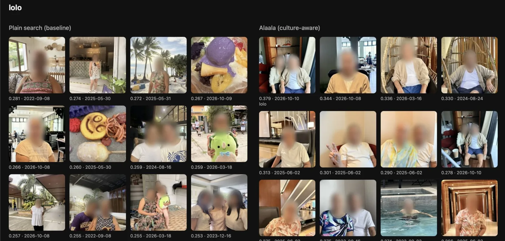
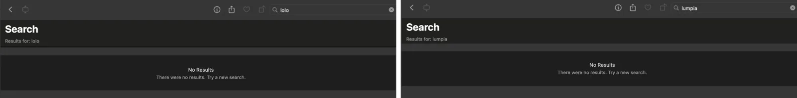
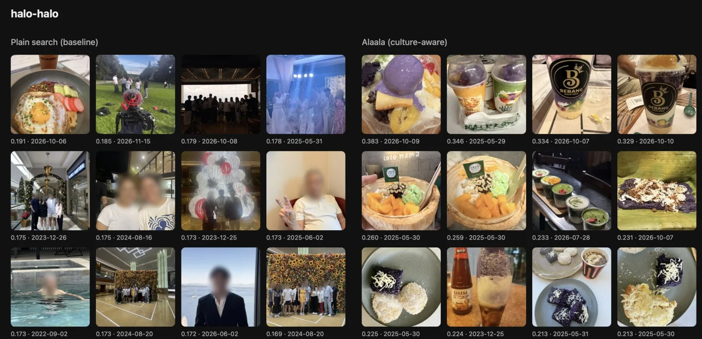
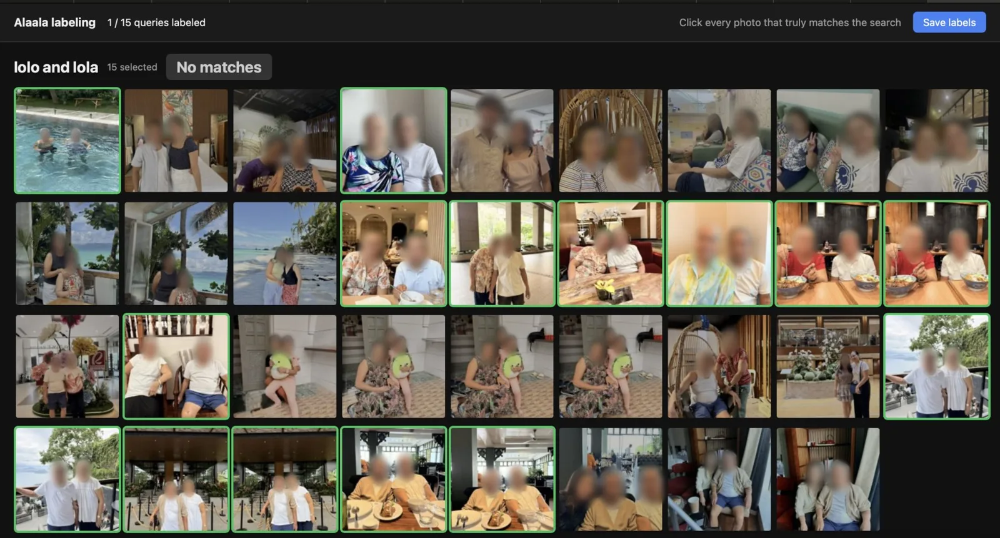
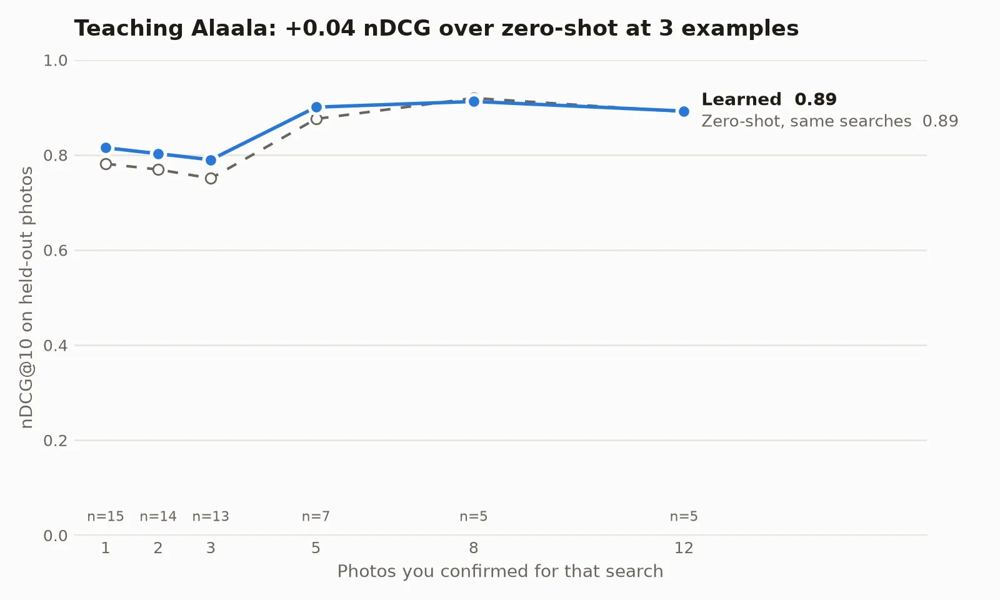

Case study · Nov 2026 · Personal project
Alaala
Search your photos the way you talk
Photo search assumes English. Type "lolo" (grandpa) into Apple Photos and you get nothing. I built a culture-aware search layer that understands Taglish, links family words to the actual people in your library, and runs entirely on your Mac. Alaala means "memory" in Tagalog.

01 · The problem
The photos were there, the words weren't
Apple's natural-language search in Photos doesn't support Filipino, and open models like CLIP don't know what "lolo" or "ensaymada" look like. Searching "lolo" in my own library returned food, beaches and random relatives. Searching "grandfather" worked fine.
That's how a lot of Filipino families actually talk: Taglish, family titles instead of names, and holidays like Noche Buena that no search engine knows the date of.

02 · What I built
A culture layer
Everything runs locally. No photos leave the Mac.
- Ingest. Reads the Apple Photos library: dates, places and the people you've named, using Photos' local previews so it works with Optimize Storage.
- Embed. Encodes every photo with Apple's MobileCLIP2, small enough to run on an 8GB M2.
- Translate culture. Turns a Taglish query into something the model understands (below).
- Search and tag. Ranks results in a native Mac app, with a Compare mode, and can write matches back into Photos as keywords after you approve them.
The culture layer
- Lexicon
- About 70 Filipino terms mapped to what they look like. "halo-halo" becomes "a shaved ice dessert with purple ube ice cream, beans and fruit," averaged as a prompt ensemble.
- Kinship mapping
- "lolo" and "tita" link to the actual people named in Photos, and their photos get a ranking boost.
- Holiday windows
- "noche buena" and "simbang gabi" limit results to the right dates.
- Only when needed
- The layer only steps in when it recognizes a term, so English searches behave exactly like before.

03 · Results
A fair test
I labeled queries from my own library with a tool I built. Candidates from both methods were pooled and shuffled, so I couldn't tell which method found which photo. The final numbers come from 14 held-out queries written after all tuning was frozen.
- +45% nDCG@10 and +66% Recall@10 on Filipino queries, with no change on English.
- Biggest wins: "pamilya dinner," "barkada" and "lolo at the table."
- On the dev set, Filipino nDCG went from 0.36 to 0.67. The drop on the test set is exactly the overfitting a held-out set exists to catch.
- "pancit" still loses on test. I left it as a known gap instead of tuning on test data.

04 · It learns from you
Every answer is training data
Alaala starts zero-shot, then learns your family's version of things. "Not this," Yes/No in Teach mode, and every tag you approve are saved locally.
- A small model per search
- After 3 yeses, it trains a logistic regression on the photo embeddings for that search and blends it in. Trust grows with evidence: examples / (examples + 8).
- Smart questions
- Teach mode shows the photos the model is least sure about (active learning), so each answer teaches it the most.
- Measured, not assumed
- My first comparison showed a +0.12 gain. A paired test, scoring both models on the same searches and the same hidden photos, showed most of that was selection bias. The honest gain is about +0.04 at 3 examples.

05 · What I learned
Trust the held-out set
Swapping every Filipino word for a description helped words CLIP didn't know, but hurt words it already did, like lumpia and pancit. Keeping the original word alongside the description fixed most of that, and only showed up on the test set.
The +0.12 that turned out to be selection bias was the most useful result of the project. It's why the tagging step always goes through human review: zero-shot similarity is great for ranking, but on my library no cutoff reached 85% precision.
A bigger Filipino word bank, on-device captions, a public demo with openly licensed photos, and more cultures: halmeoni, abuela, bà.